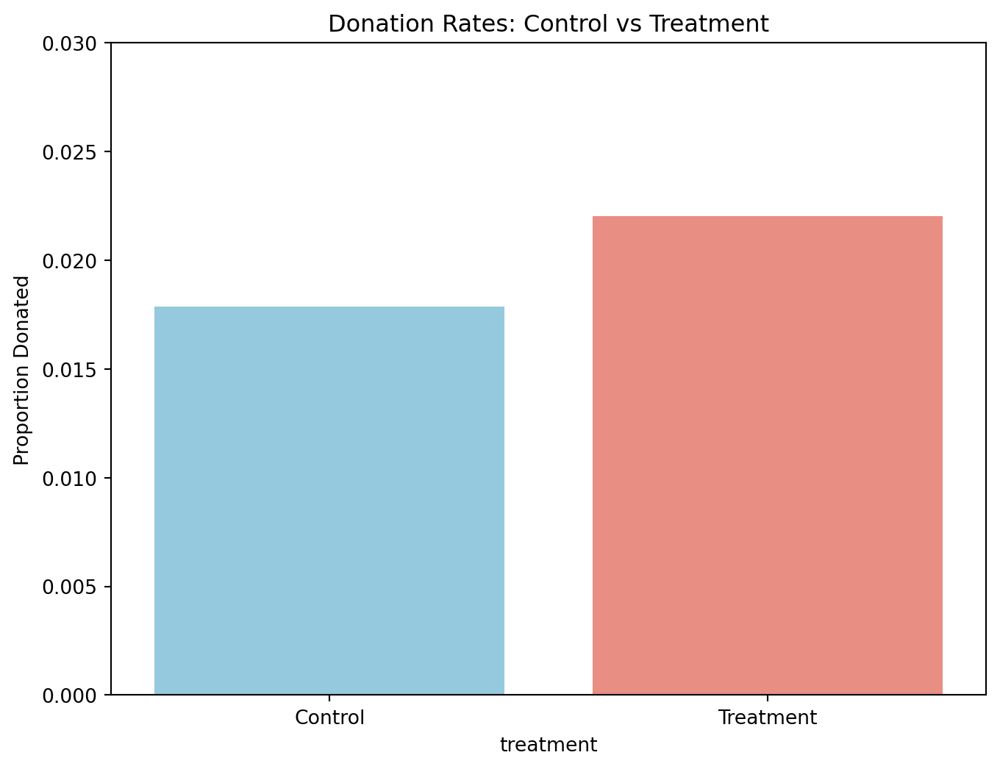
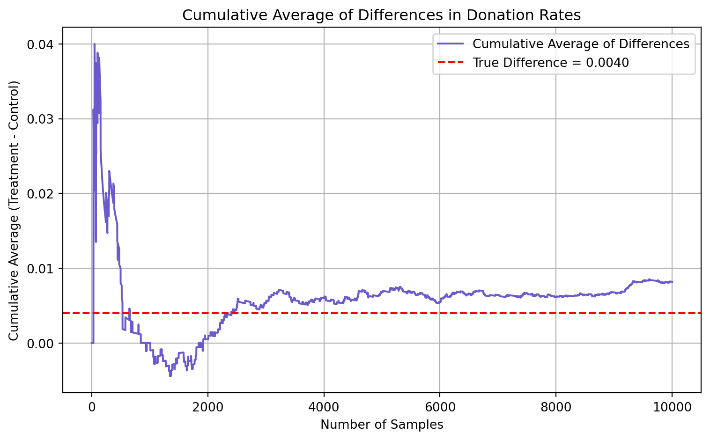

Dean Karlan at Yale and John List at the University of Chicago conducted a field experiment to test the effectiveness of different fundraising letters. They sent out 50,000 fundraising letters to potential donors, randomly assigning each letter to one of three treatments: a standard letter, a matching grant letter, or a challenge grant letter. They published the results of this experiment in the American Economic Review in 2007. The article and supporting data are available from the AEA website and from Innovations for Poverty Action as part of Harvard’s Dataverse.
The paper investigates how matching grants influence charitable donations. Karlan and List (2007) randomized 50,083 donors into three groups: control, matching, and challenge. The matching group was subdivided further by match ratios (1:1, 2:1, 3:1) and match thresholds ($25k, $50k, $100k, unspecified). Letters also varied in suggested ask amount. The study tested how these variations affected the likelihood someone donates (response rate) as well as the amount they give. The experiment varied the maximum match amount offered ($25K, $50K, $100K, or unspecified) and the suggested donation amount (based on past giving).
This project seeks to replicate their results.
Data
Description
import numpy as npimport pandas as pdfrom scipy.stats import timport statsmodels.formula.api as smfimport matplotlib.pyplot as pltimport seaborn as snsimport statsmodels.api as smdata = pd.read_stata('karlan_list_2007.dta')print(data.head(5))print("Data shape:", data.shape)
treatment control ratio ratio2 ratio3 size size25 size50 \
0 0 1 Control 0 0 Control 0 0
1 0 1 Control 0 0 Control 0 0
2 1 0 1 0 0 $100,000 0 0
3 1 0 1 0 0 Unstated 0 0
4 1 0 1 0 0 $50,000 0 1
size100 sizeno ... redcty bluecty pwhite pblack page18_39 \
0 0 0 ... 0.0 1.0 0.446493 0.527769 0.317591
1 0 0 ... 1.0 0.0 NaN NaN NaN
2 1 0 ... 0.0 1.0 0.935706 0.011948 0.276128
3 0 1 ... 1.0 0.0 0.888331 0.010760 0.279412
4 0 0 ... 0.0 1.0 0.759014 0.127421 0.442389
ave_hh_sz median_hhincome powner psch_atlstba pop_propurban
0 2.10 28517.0 0.499807 0.324528 1.0
1 NaN NaN NaN NaN NaN
2 2.48 51175.0 0.721941 0.192668 1.0
3 2.65 79269.0 0.920431 0.412142 1.0
4 1.85 40908.0 0.416072 0.439965 1.0
[5 rows x 51 columns]
Data shape: (50083, 51)
The dataset has 50,083 observations and 51 columns. The fields included in the dataset assign individuals to either control or treatment, the specifications for the treatment group, donation history of an individual, as well as some socioeconomic & political & demographic data about the individual. The variables and their descriptions are outlined below:
Variable Definitions
Variable
Description
treatment
Treatment
control
Control
ratio
Match ratio
ratio2
2:1 match ratio
ratio3
3:1 match ratio
size
Match threshold
size25
$25,000 match threshold
size50
$50,000 match threshold
size100
$100,000 match threshold
sizeno
Unstated match threshold
ask
Suggested donation amount
askd1
Suggested donation was highest previous contribution
askd2
Suggested donation was 1.25 x highest previous contribution
askd3
Suggested donation was 1.50 x highest previous contribution
ask1
Highest previous contribution (for suggestion)
ask2
1.25 x highest previous contribution (for suggestion)
ask3
1.50 x highest previous contribution (for suggestion)
amount
Dollars given
gave
Gave anything
amountchange
Change in amount given
hpa
Highest previous contribution
ltmedmra
Small prior donor: last gift was less than median $35
freq
Number of prior donations
years
Number of years since initial donation
year5
At least 5 years since initial donation
mrm2
Number of months since last donation
dormant
Already donated in 2005
female
Female
couple
Couple
state50one
State tag: 1 for one observation of each of 50 states; 0 otherwise
nonlit
Nonlitigation
cases
Court cases from state in 2004-5 in which organization was involved
statecnt
Percent of sample from state
stateresponse
Proportion of sample from the state who gave
stateresponset
Proportion of treated sample from the state who gave
stateresponsec
Proportion of control sample from the state who gave
stateresponsetminc
stateresponset - stateresponsec
perbush
State vote share for Bush
close25
State vote share for Bush between 47.5% and 52.5%
red0
Red state
blue0
Blue state
redcty
Red county
bluecty
Blue county
pwhite
Proportion white within zip code
pblack
Proportion black within zip code
page18_39
Proportion age 18-39 within zip code
ave_hh_sz
Average household size within zip code
median_hhincome
Median household income within zip code
powner
Proportion house owner within zip code
psch_atlstba
Proportion who finished college within zip code
pop_propurban
Proportion of population urban within zip code
I define a function to print results from regressions in a readable format:
def print_clean_regression_results(model, variable_names=None): results = model.params.to_frame('Coefficient') results['Std. Error'] = model.bse results['t'] = model.tvalues results['p-value'] = model.pvalues results = results.round(4)if variable_names: results.index = [variable_names.get(var, var) for var in results.index]print(results)
Balance Test
As an ad hoc test of the randomization mechanism, I provide a series of tests that compare aspects of the treatment and control groups to assess whether they are statistically significantly different from one another.
I create a function t_test_manual that breaks down the steps to compute a t-statistic:
I define the variables that I want to test: the number of months since last donation (mrm2), the highest previous contribution (hpa), the number of prior donations (freq), and the number of years since initial donation (years). I test these variables at the 95% confidence level and run a linear regression on each of the variables and look at the estimated coefficient on the treatment variable:
At the 95% confidence level, none of the baseline variables differ significantly between the treatment and control groups as all of the p-values associated with the variables are larger than 0.05. This supports random assignment - it shows that baseline characteristics are balanced between the treatment and control groups. As a result, we can conclude that any observed differences in charitable giving outcomes are due to the treatment and not pre-existing group differences.
Experimental Results
Charitable Contribution Made
First, I analyze whether matched donations lead to an increased response rate of making a donation.
I create a barplot that shows the proportion of people who donated in the control group and the treatment group:
donation_rates = data.groupby('treatment')['gave'].mean()plt.figure(figsize=(8, 6))sns.barplot( x=donation_rates.index, y=donation_rates.values, palette=['skyblue', 'salmon'])plt.xticks([0, 1], ['Control', 'Treatment'])plt.ylabel('Proportion Donated')plt.title('Donation Rates: Control vs Treatment')plt.ylim(0, 0.03)plt.show()
/var/folders/j9/vvtdz6r56zg0sw78kg9kfsk00000gn/T/ipykernel_2246/1576349855.py:4: FutureWarning:
Passing `palette` without assigning `hue` is deprecated and will be removed in v0.14.0. Assign the `x` variable to `hue` and set `legend=False` for the same effect.
sns.barplot(

Next, I run a t-test between the treatment and control groups on the binary outcome of whether any charitable donation was made:
treat_group = data[data['treatment'] ==1]['gave']control_group = data[data['treatment'] ==0]['gave']t_stat, p_val = t_test_manual(treat_group, control_group)print(f"T-test on gave: t = {t_stat:.4f}, p-value = {p_val:.4f}")
T-test on gave: t = 3.2095, p-value = 0.0013
I then run a linear regression on whether any charitable donation was made with treatment as the explanatory variable:
Coefficient Std. Error t p-value
Intercept 0.0179 0.0011 16.2246 0.0000
Treatment 0.0042 0.0013 3.1014 0.0019
Linear Regression on 'gave ~ treatment':
Coefficient on treatment: 0.0042,
t: 3.1014, p-value: 0.0019
People in the treatment group were 0.42% more likely to donate than those in the control group, and this effect is statistically significant at a 95% confidence level as the p-value for the treatment variable is 0.0019 (0.0019 < 0.05). This supports the idea that matching gift offers nudge more people to give, even if the absolute effect seems small.
What we learn about human behavior: Social & Psychological Motivation
Even a small match taps into social proof and reciprocity, which are powerful motivators for charitable giving. The presence of a matching gift offer can create a sense of urgency and social pressure to contribute, leading to increased donations. This aligns with the concept of social norms, where individuals are influenced by the behavior of others in their social group. The matching gift offer serves as a signal that others are also contributing, which can motivate individuals to join in and support the cause.
Donation behavior are not purely altruistic - if it was, we might expect people to give regardless of match framing. Instead, people are motivated by cues about effectiveness and urgency, suggesting many give in part for “warm glow” satisfaction - the emotional reward of feeling generous and impactful.
I now run a probit regression where the outcome variable is whether any charitable donation was made and the explanatory variable is assignment to treatment or control:
The positive coefficient on treatment means that receiving a matching offer increases the probability of donating. The treatment effect is positive and is statistically significant at a 1% significance level: the p-value associated with the treatment variable is 0.002 as seen in the probit regression. This suggests humans are sensitive to social validation when making charitable decisions.
The results from the probit regression confirm the results reported in Table 3 of the paper. From our probit regression, I find that the marginal effect of the treatment is 0.0043 with a standard error of 0.001, and column 1 of Table 3 reports a marginal effect of 0.004 (rounded) with standard error 0.001
Differences between Match Rates
Next, I assess the effectiveness of different sizes of matched donations on the response rate.
I conduct a series of t-tests to test whether the size of the match ratio has an effect on whether people donate or not:
None of the differences across match ratios are significant at a 5% significance level. All of the p-values are larger than 0.05 (0.3345, 0.3101, 0.9600).
This demonstrates that higher match ratios, such as 3:1 compared to 1:1, do not lead to a statistically significantly greater increase in donor participation. A basic 1:1 match performs almost as well, making it a more cost-effective option. This indicates that nonprofits can generate comparable donor response using lower match ratios, which may help maximize the impact of their fundraising resources.
From the paper, the author makes the comment: “the figures suggest that neither the match threshold nor the example amount had a meaningful influence on behavior.” The results of the t-test reinforce this comment as the different match ratios do not have a significant effect on the donation.
I approach the same problem using a regression approach. I create the variable ratio1 then regress gave on ratio1, ratio2, and ratio3:
Coefficient Std. Error t p-value
Intercept 0.0179 0.0011 16.2245 0.0000
Match 1:1 0.0029 0.0017 1.6615 0.0966
Match 2:1 0.0048 0.0017 2.7445 0.0061
Match 3:1 0.0049 0.0017 2.8016 0.0051
I interpret the coefficients and their statistical precision: the intercept (1.79%) is the baseline donation rate for the control group. The ratio1 (1:1) adds +0.29% to that (total ≈ 2.68%), but the result is significant at a 90% confidence level (p-value ≈ 0.096). ratio2 (2:1) and ratio3 (3:1) both raise donation rates by 0.48 and 0.49% respectively to 2.66 and 2.68% and are statistically significant at the 1% level (with p-values of 0.0061 and 0.0051 respectively).
I calculate the response rate difference between the 1:1 and 2:1 match ratios and the 2:1 and 3:1 ratios. I do this directly from the data:
response_rates = data.groupby('ratio', observed=False)['gave'].mean()coef_ratio2 = regression_model.params['ratio2']coef_ratio3 = regression_model.params['ratio3']intercept = regression_model.params['Intercept']diff_data_2_1 = response_rates[2] - response_rates[1]diff_data_3_2 = response_rates[3] - response_rates[2]print("Response Rates from Raw Data:")print(f"1:1 match = {response_rates[1]:.4f}")print(f"2:1 match = {response_rates[2]:.4f}")print(f"3:1 match = {response_rates[3]:.4f}")print(f"Difference (2:1 - 1:1): {diff_data_2_1:.4f}")print(f"Difference (3:1 - 2:1): {diff_data_3_2:.4f}")
Response Rates from Raw Data:
1:1 match = 0.0207
2:1 match = 0.0226
3:1 match = 0.0227
Difference (2:1 - 1:1): 0.0019
Difference (3:1 - 2:1): 0.0001
The difference from the raw data between the 1:1 match and the 2:1 match is 0.0019 and the difference from the raw data between the 1:1 match and the 3:1 match is 0.0001.
I now calculate the response rate difference between the 1:1 and 2:1 match ratios and the 2:1 and 3:1 ratios with the fitted coefficients from the regression:
Predicted Donation Rates from Regression Model:
1:1 match = 0.0179
2:1 match = 0.0226
3:1 match = 0.0227
Difference (2:1 - 1:1): 0.0048
Difference (3:1 - 2:1): 0.0001
The difference from the regression model between the 1:1 match and the 2:1 match is 0.0048 and the difference from the regression model between the 1:1 match and the 3:1 match is 0.0001.
There is no strong evidence that offering larger match ratios (e.g., 3:1 instead of 1:1) is more effective in increasing the number of donors. A simple 1:1 match is nearly just as effective, making it a more cost-efficient fundraising strategy. This suggests that organizations can achieve similar results with lower match ratios, which can be beneficial for their fundraising efforts.
Size of Charitable Contribution
In this subsection, I analyze the effect of the size of matched donation on the size of the charitable contribution.
I run a bivariate linear regression of the donation amount on the treatment status:
reg_all = smf.ols("amount ~ treatment", data=data).fit()print("Regression on all participants (includes non-donors):")print_clean_regression_results(reg_all, variable_names={'Intercept': 'Intercept', 'treatment': 'Treatment'})
Regression on all participants (includes non-donors):
Coefficient Std. Error t p-value
Intercept 0.8133 0.0674 12.0630 0.0000
Treatment 0.1536 0.0826 1.8605 0.0628
People in the control group gave $0.81 on average (including non-donors). Being in the treatment group increases the average donation by $0.15, a 19% increase, but this is only significant at a 10% significance level (p ≈ 0.06). Most people didn’t donate, making the average low because the dataset includes a lot of zeros.
Now I limit the data to just people who made a donation and repeat the previous analysis. This regression allows me to analyze how much respondents donate conditional on donating some positive amount:
data_donated = data[data['gave'] ==1]reg_conditional = smf.ols("amount ~ treatment", data=data_donated).fit()print("\nRegression on donors only (conditional on giving):")print_clean_regression_results(reg_conditional, variable_names={'Intercept': 'Intercept', 'treatment': 'Treatment'})
Regression on donors only (conditional on giving):
Coefficient Std. Error t p-value
Intercept 45.5403 2.4234 18.7921 0.0000
Treatment -1.6684 2.8724 -0.5808 0.5615
The average donation among donors that gave is $45.54 in the control group. This is the intercept of the regression and is statistically significant at a 1% significance level given its p-value is ~0.
Donors who received the matching grant treatment gave $1.67 less than control donors. This difference is not statistically significant (p = 0.561).
This regression confirms that among people who already decided to donate, the amount they gave did not increase with a match incentive. This confirms the statement in the paper that reads “The match increases participation, but does not significantly affect the donation amount conditional on giving.” The treatment coefficient has a causal interpretation about the effect on donors since this regression is conditional on giving. Donors were randomly assigned to treatment (match) or control (no match) and random assignment ensures that treatment is independent of unobserved confounders. So the coefficient on treatment estimates the causal effect of being offered a match.
I make two plot: one for the treatment group and one for the control. Each plot shows a histogram of the donation amounts only among people who donated:
I observe a similar distribution of donation amounts in both control and treatment groups. The average donation is slightly higher in control, which aligns with the regression result. Most donations cluster below $100, with the majority of the data falling between $0 to $50, and we observe a long tail.
The treatment effect is effective in motivating more people to give, not by getting people to give more.
Simulation Experiment
As a reminder of how the t-statistic “works,” in this section I use simulation to demonstrate the Law of Large Numbers and the Central Limit Theorem.
Suppose the true distribution of respondents who do not get a charitable donation match is Bernoulli with probability p=0.018 that a donation is made.
Further suppose that the true distribution of respondents who do get a charitable donation match of any size is Bernoulli with probability p=0.022 that a donation is made.
First, we compute the actual difference in the data:
From the observed data, I find that the observed difference between the treatment group and the control group is 0.0040.
Law of Large Numbers
I now simulate 10,000 draws from the control distribution and 10,000 draws from the treatment distribution. I then calculate a vector of 10,000 differences. I present a histogram for the sampling distributions for the treatment group, the control group, and the difference between the two groups:
np.random.seed(42)p_control =0.018p_treatment =0.022n_simulations =10000sample_size =500control_means = []treatment_means = []diffs = []for i inrange(n_simulations): control_sample = np.random.binomial(1, p_control, sample_size) treatment_sample = np.random.binomial(1, p_treatment, sample_size) control_mean = control_sample.mean() treatment_mean = treatment_sample.mean() diff = treatment_mean - control_mean control_means.append(control_mean) treatment_means.append(treatment_mean) diffs.append(diff)control_means = np.array(control_means)treatment_means = np.array(treatment_means)diffs = np.array(diffs)fig, axes = plt.subplots(3, 1, figsize=(8, 12), sharex=True)sns.histplot(control_means, bins=50, kde=True, color='skyblue', ax=axes[0])axes[0].set_title('Sampling Distribution of Control Group Means')axes[0].set_ylabel('Frequency')sns.histplot(treatment_means, bins=50, kde=True, color='salmon', ax=axes[1])axes[1].set_title('Sampling Distribution of Treatment Group Means')axes[1].set_ylabel('Frequency')sns.histplot(diffs, bins=50, kde=True, color='slateblue', ax=axes[2])axes[2].set_title('Sampling Distribution of Differences (Treatment - Control)')axes[2].set_xlabel('Proportion Donated')axes[2].set_ylabel('Frequency')plt.tight_layout()plt.show()
I plot the cumulative average of the vector of differences:
np.random.seed(42)n_control =10000n_treatment =10000p_control =0.018p_treatment =0.022control_draws = np.random.binomial(1, p_control, n_control)treatment_draws = np.random.binomial(1, p_treatment, n_treatment)differences = treatment_draws - control_drawscumulative_avg = np.cumsum(differences) / np.arange(1, len(differences) +1)plt.figure(figsize=(10, 5))plt.plot(cumulative_avg, label='Cumulative Average of Differences', color='slateblue')plt.axhline(y=p_treatment - p_control, color='red', linestyle='--', label=f"True Difference = {p_treatment - p_control:.4f}")plt.title("Cumulative Average of Differences in Donation Rates")plt.xlabel("Number of Samples")plt.ylabel("Cumulative Average (Treatment - Control)")plt.legend()plt.grid(True)plt.tight_layout()plt.show()

What the Chart Shows: X-axis: Number of samples (from 1 up to 10,000) Y-axis: Cumulative average difference in donation rates (Treatment - Control) Blue Line: The running (cumulative) average of the difference in donation rates Red Dashed Line: The “true” or overall difference in donation rates across all data = 0.0040
The Law of Large Numbers says that as you increase your sample size, the sample average will converge to the true population mean.
When the sample size is small (i.e., the first few hundred donors), the cumulative average fluctuates wildly, up to nearly 0.04, due to the small sample size. As the sample grows, the cumulative average smooths out and converges around 0.004, the red line. This is Law of Large Numbers in action: with more data, the sample estimate gets closer to the true treatment effect.
Central Limit Theorem
In this section of the analysis, I generated sampling distributions of the difference in donation rates between treatment and control groups by repeatedly drawing samples of different sizes (50, 200, 500, and 1000) and calculating the average difference in donation rates for each draw. I plot the histograms of the distributions:
The 4 histograms above display the distributions of sample means for different sample sizes.
At the smallest sample size (n = 50), the distribution of differences is wide and relatively noisy, with zero appearing near the center of the distribution. This means that with small samples, even when there is a true difference between treatment and control groups, the observed difference can often appear close to zero purely by chance: the signal is weak and buried in variability.
As the sample size increases to 200, the distribution becomes more concentrated, and I begin to see that zero is slightly less central. When I reach sample sizes of 500 and especially 1000, the distributions are sharply peaked and much narrower. Importantly, in these larger samples, zero is clearly in the tail of the distribution, not the center. This means that the observed differences consistently reflect the true underlying effect (here, a 0.004 increase in donation probability due to treatment), and it becomes increasingly unlikely that such a difference would be due to random chance alone.
The Central Limit Theorem and the Law of Large Numbers are illustrated: as sample size increases, sampling distributions of means become approximately normal and converge around the true mean. It also reinforces the intuition behind statistical significance—larger samples make it easier to detect small but real effects because zero is no longer a plausible value under the observed distribution of outcomes.